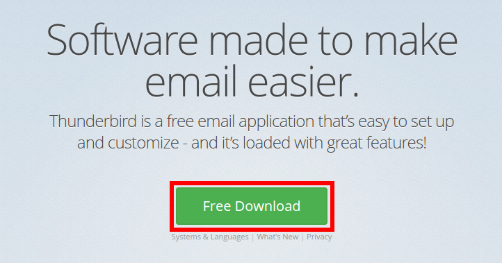
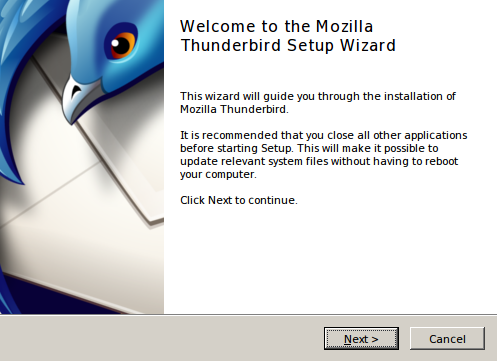
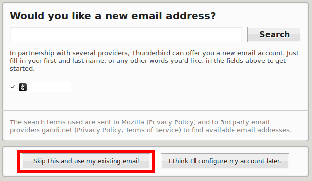
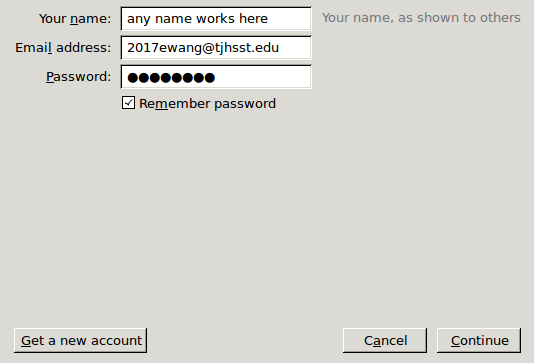
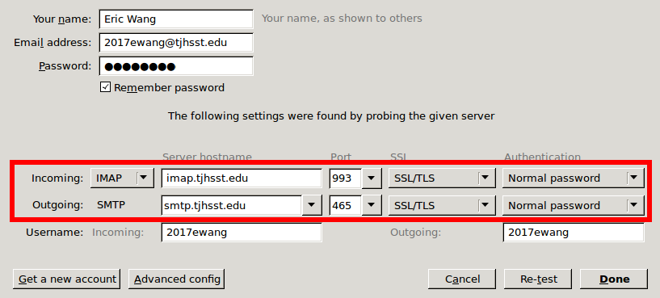
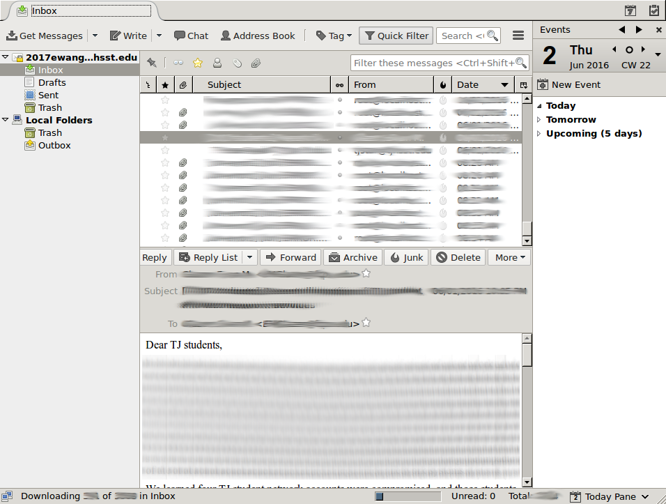

This guide will teach you how to set up your TJ email with Thunderbird. If you have any problems with this guide, please email sysadmins@lists.tjhsst.edu.
1. Download Thunderbird by navigating here and clicking the green button.
2. Run the installer and follow the instructions. Start up Thunderbird after it is installed.
3. Click the "Skip this and use my existing email" button after Thunderbird starts up.
4. Enter your TJ email for the email address field and your webmail password for the password field. Press "Continue" after you have filled out these fields.
5. Change all of the settings you see in the red box to the ones in the screenshot below. Press "Re-test" and then "Done". The "Done" button will be disabled until you press "Re-test".
6. That's it! You should be able to access your email now.
